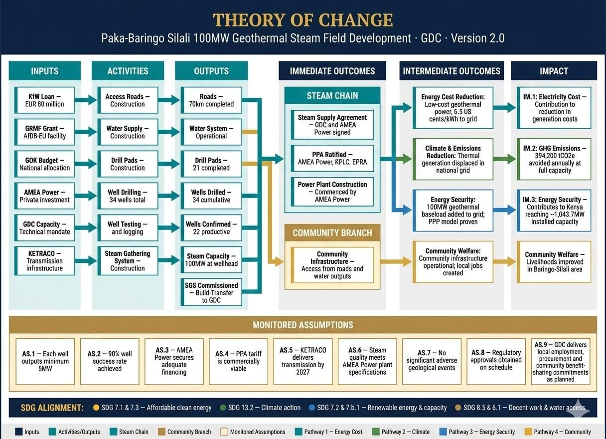
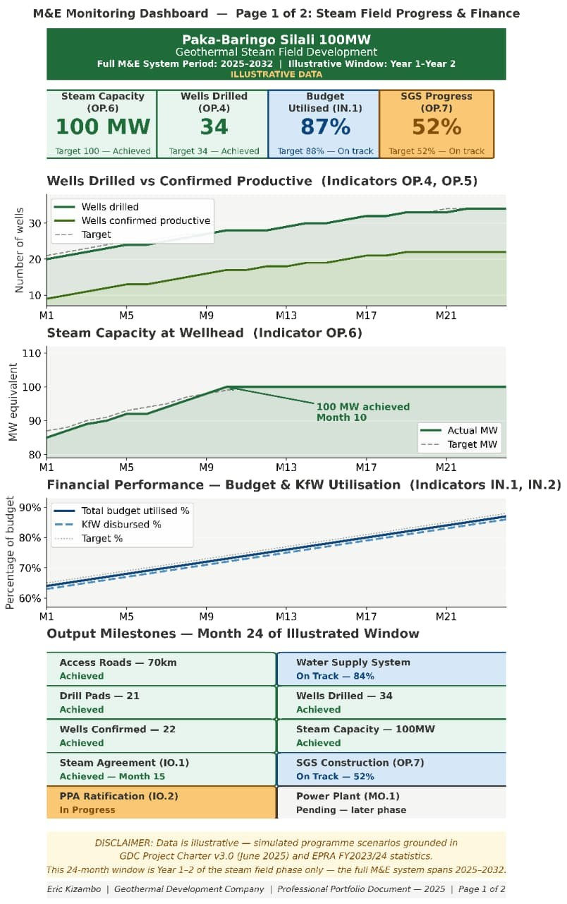
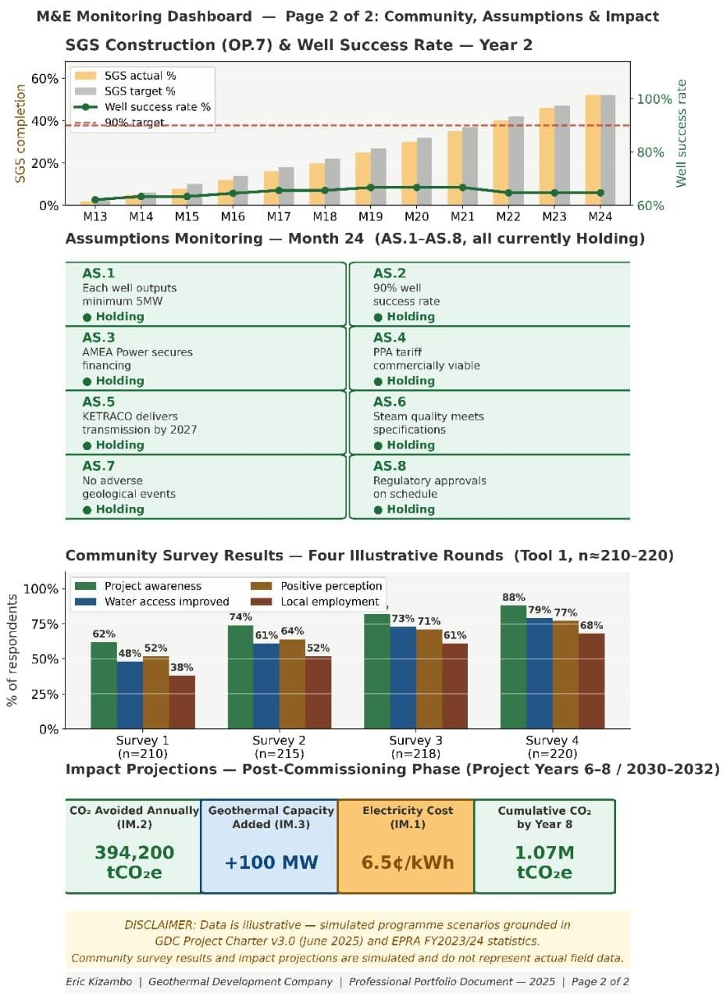

A Theory of Change across four pathways, a 19-indicator results framework, four data collection tools, and a working monitoring dashboard, designed for the Paka-Baringo Silali project financed by KfW and GRMF.
I designed this M&E system for GDC's Paka-Baringo Silali project, a live 70 to 100MW geothermal steam field development in Kenya's Rift Valley. The system had to answer to three audiences at once: KfW and GRMF as financing partners, GDC's own project managers making weekly decisions, and the communities living inside the project footprint.
What follows is a condensed view built for this portfolio. The complete document runs to 19 indicators, four data collection tools, a full RACI matrix, a three-stage evaluation plan, and twelve annexes.
Wells drilled at Paka feed a single steam chain, but the case for the project runs through four separate causal pathways: cost, climate, security, and community. Each is tracked to impact by its own indicators.

The full matrix tracks 19 indicators from input to impact. These ten are the ones a donor supervision mission or a management review would ask about first.
| Level | Indicator | Baseline | Final Target |
|---|---|---|---|
| Input | Budget utilised IN.1 | 63% | 100% |
| Output | Steam capacity at wellhead OP.6 | 85 MW | 100 MW |
| Output | Wells drilled, cumulative OP.4 | 20 wells | 34 wells |
| Output | Steam gathering system OP.7 | 0% | 100% |
| Imm. Outcome | Steam supply agreement IO.1 | Not signed | Signed, achieved |
| Imm. Outcome | PPA ratified by EPRA IO.2 | Not ratified | Ratified |
| Int. Outcome | MW commissioned MO.1 | 0 MW | 70–100 MW |
| Impact | CO2 avoided annually IM.2 | 0 tCO2e | 394,200 tCO2e |
| Impact | Electricity generation cost IM.1 | 22¢/kWh, emergency | 6.5¢/kWh |
| Impact | Geothermal capacity added IM.3 | 0 MW from Paka | 70–100 MW |
All 19 indicators carry a sheet like this one, so that anyone reviewing a number can see where it came from and how it was worked out. The three rows marked in red are the ones that decide whether the number holds up.
These four produce the evidence behind every indicator in the matrix. Two of them go to households inside the project area.
Household attitudes, satisfaction with benefit-sharing, changes in livelihood, water access and employment. Seven sections run from household profile through water, infrastructure, employment, community relations and grievances, to what people expect next.
Compliance against the Environmental and Social Commitment Plan and KfW's safeguards requirements, covering air and noise, water and groundwater, land and soil, biodiversity, occupational health and safety, community health and security, and social and economic safeguards.
Drilling progress, infrastructure milestones, financial utilisation and commercial milestone status. Seven sections, filled in by section heads and the AMEA Power project team, due by the 10th of the following month.
Depth on outcomes, commercial progress, assumption status and how stakeholders read the project. Four informant groups spanning AMEA Power, EPRA, KfW, KPLC, KETRACO, Ministry officials and community leaders.
Data comes in from six GDC sections, a private partner, published regulator statistics and 200 households. It moves through four stages before anyone quotes it.
Drilling, infrastructure, finance, HR and environment sections. AMEA Power. Households. EPRA and KPLC published records.
Section heads submit by the 5th of each month. The M&E Division aggregates into the master monitoring matrix by the 15th.
Four checks, set out below, against the seven standard dimensions of data quality.
Dashboard, monthly and quarterly reports, community engagement reports, and the evaluation reviews.
Every required field is there, for every indicator, for the period being reported.
Values sit inside defined ranges and match the indicator's stated unit and definition.
A second, independent source backs the figure before it becomes a conclusion.
Movement against earlier periods can be explained. Unexplained jumps go back to source.
Each report has a fixed owner, a due date and a named audience.
| Report | Frequency | Goes to |
|---|---|---|
| Dashboard update | Monthly | Project Manager, senior management, section heads |
| Internal M&E report | Monthly | Project Manager, GDC Board |
| Donor progress report | Quarterly | KfW, GRMF, Ministry of Finance |
| Community engagement report | Bi-annual | Community leaders, Baringo County Government, KfW |
| Annual results report | Annual | KfW, GRMF, Ministry of Energy, GDC Board, AMEA Power |
| Ad hoc issue report | As required | KfW, GDC Board, Ministry of Energy |
Monitoring tells you whether the project is doing what it said it would. Evaluation asks whether it made a difference, and why. The six OECD-DAC criteria, written as questions about this project.
| Evaluation | When | Who runs it | Budget |
|---|---|---|---|
| Mid-term review | Year 2 | GDC M&E Division with the KfW project officer | USD 40k–60k |
| Pre-commissioning evaluation | Years 4–5 | Independent external evaluator | USD 80k–120k |
| Post-commissioning impact evaluation | Years 7–8 | Independent external team | USD 120k–180k |
The lead method is contribution analysis. It builds the causal argument one link at a time and asks what evidence exists at each step: GDC drills and confirms wells, steam capacity is confirmed at a commercially viable cost, AMEA Power commissions the plant, electricity is generated at 6.5 US cents per kWh, thermal generation is displaced, costs come down, CO2 is avoided. Where the evidence for a link is thin, the claim is written down as thin.
Difference-in-differences handles the community welfare side, comparing Baringo county indicators before and after commissioning against comparable counties, using KNBS household survey data alongside the project's own bi-annual community surveys.
Both methods are worked through in full, with the alternatives that were considered and the reasons they were set aside, in Document 03 →
Three conditions require a written response to KfW, whatever the reporting calendar happens to say.
Triggers a reservoir engineering review and a revised drilling plan. Assumption AS.2, which the whole steam field rests on, puts the success rate at 90%.
Triggers a commercial review between GDC, AMEA Power and KfW. Confirmed steam capacity is worth nothing until the plant that uses it is financed.
Triggers a community relations review and a revision of the stakeholder engagement plan. Tool 2 counts the grievances and Tool 1 checks them independently.
Built from the same monitoring matrix, using a simulated 24-month dataset to test the system end to end before it runs on real project data. Page one carries steam field progress and finance. Page two carries assumption status, four rounds of community survey results, and the post-commissioning impact projections.


All figures on this page, including the KPI strip, indicator baselines and targets, and the dashboard image, are illustrative. They are built from simulated programme scenarios grounded in GDC's Project Charter (Version 3.0, June 2025) and EPRA's FY2023/2024 published statistics, not from GDC's actual internal, financial, or technical data. This document has not been reviewed or endorsed by GDC, KfW, or GRMF, and any use beyond personal portfolio purposes should be confirmed with GDC first.
The Theory of Change, indicator framework, data collection tools, evaluation plan, and system design are original professional work, designed for a live GDC project rather than a hypothetical one. The specific figures shown stand in for GDC's actual reporting data, which is internal, to demonstrate how the system functions in practice. The full disclaimer, including the source for every baseline figure, is in the complete PDF below.